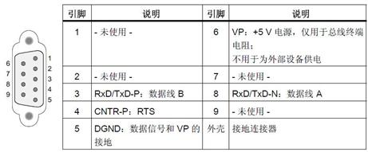
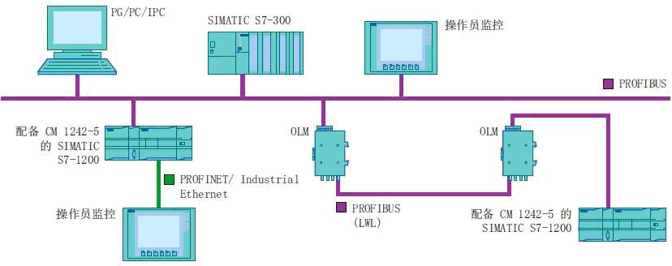
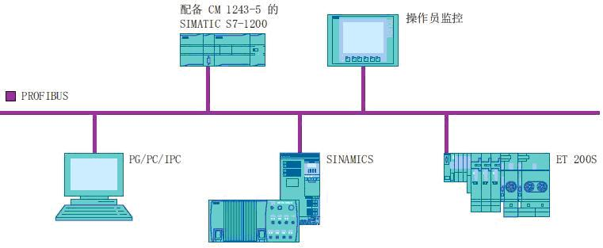

S7-1200 CPU固件版本 从V2.0 开始，组态软件STEP 7 版本从 V11.0开始，支持PROFIBUS DP通信。使用STEP 7 Basic V11 或使用STEP 7 Professional V11 可对S7-1200 做PROFIBUS DP 通信组态。
S7-1200 支持PROFIBUS DP通信的模块：
CM 1243-5 DP 主站模块，订货号：6GK7 243-5DX30-0XE0
CM 1242-5 DP 从站模块，订货号：6GK7 242-5DX30-0XE0
| 特性数据 | 参数 |
| 传输速率 | 9.6 Kbps 到 12 Mbps |
| PROFIBUS DP 地址范围 | 0到127 |
| S7-1200 DP主站数据区的大小 | 最大 1024 字节 输入区最大 512 字节，输出区最大 512 字节。 |
| S7-1200 DP从站数据区的大小 | 输入区最大 240 字节，输出区最大 240 字节，每个 DP 从站的诊断数据区最大 240 字节。 |
| CPU 硬件版本 | CM1243-5固件版本 | 博途软件版本 | 可带主站数量 | DP 从站最大数量 | 扩展站子模块最大数量总和 |
|---|---|---|---|---|---|
V4.0 & V4.1 |
V1.3及其以上 |
STEP7 V13 |
3 |
32 |
512 |
V3.0 |
V1.2及其以上 |
STEP7 V12 |
3 |
32 |
512 |
V2.2 |
V1.0/V1.1 |
STEP7 V11 |
1 |
16 |
256 |
CM 1242-5从站模块，可以成为以下 DP V0 / V1 主站的通信伙伴：
CM 1243-5主站模块，可与以下 DP-V0 / V1 从站进行通信：
S7-1200 PROFIBUS CM 使用 PROFIBUS DP V1 协议，实现以下类型的通信：
周期性通信，CM 1242-5 和 CM 1243-5都支持。
非周期性通信，从站 CM 1242-5 不支持，主站 CM 1243-5支持使用软件指令块进行非周期性通信。
S7通信：
可通过 PROFIBUS 与其它 S7 控制器使用 PUT/GET 指令通信。
PG/OP 通信：
通过CM 1243-5 ，可对S7-1200 做下载、诊断操作，或连接S7-1200 到HMI 面板、装有 WinCC flexible 的 SIMATIC PC 、支持 S7 通信的 SCADA 系统。
CM 1242-5 通过背板总线供电。
CM 1243-5 通过模块附带的24 V DC 电源连接器供电。
通过RS485 网络总线连接器连接到 PROFIBUS DP 网络，9 针D型头的引脚分配如下图：

做从站

做主站
